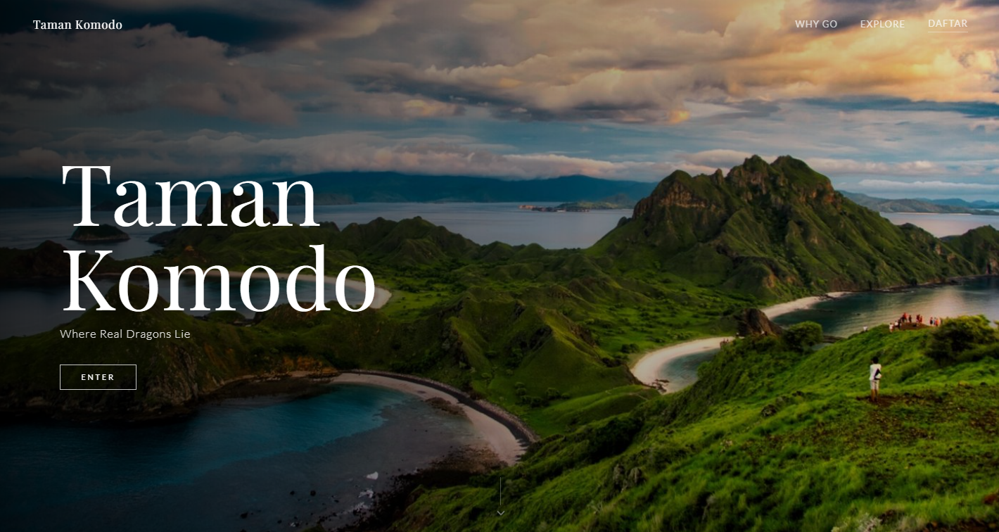
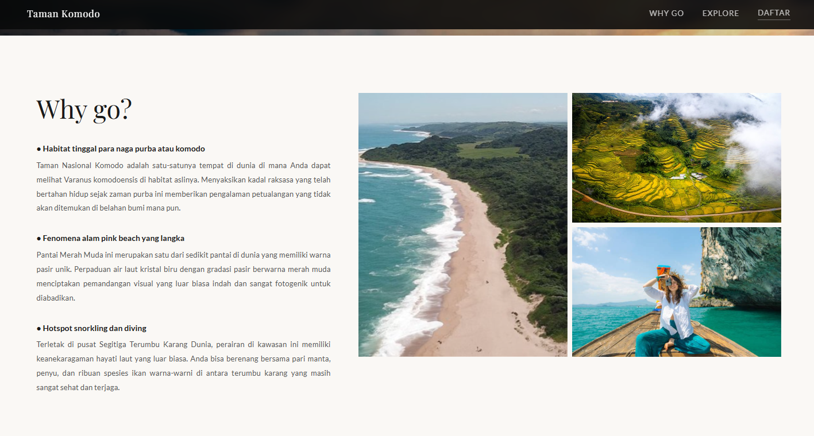
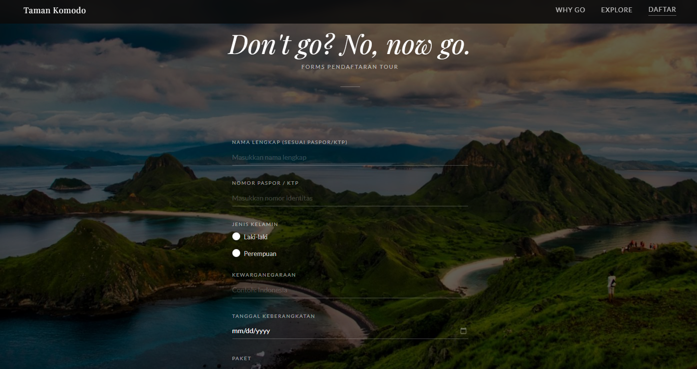

Taman Komodo Explore
Sebuah platform landing page interaktif yang didedikasikan untuk mengenalkan daya tarik eksotis Taman Nasional Komodo, dilengkapi dengan galeri keindahan alam dan integrasi form pendaftaran reservasi tour.
Hero Section Memukau
Halaman beranda didesain menggunakan gambar panorama landscape perbukitan Pulau Komodo yang menakjubkan sebagai latar belakang layar penuh (full-screen hero).
Tipografi tebal bertuliskan "Taman Komodo" diposisikan di tengah untuk menarik atensi instan pengunjung disertai tombol interaktif "Explore Now".
- Struktur tata letak navigasi transparan di bagian atas.
- Kombinasi skema warna cerah bertema petualangan alam liar.

Daya Tarik Utama (Why Go)
Bagian ini memaparkan alasan kuat mengapa wisatawan harus berkunjung ke destinasi ini, seperti melihat naga purba Komodo di habitat aslinya, berenang di keunikan Pink Beach, serta menyelami biota laut.
- Galeri foto kolase vertikal yang menampilkan pemandangan alam.
- Penataan poin-poin penjelasan ikonik yang mudah dibaca.

Formulir Pendaftaran Tour
Di bagian akhir halaman, disematkan formulir pendaftaran tour "Don't go? No, now go." yang elegan untuk mengumpulkan informasi nama, nomor kontak, serta tanggal rencana keberangkatan pengunjung.
- Desain form transparan dengan teknik Glassmorphism modern.
- Validasi form dasar untuk memastikan data yang diinput benar.
